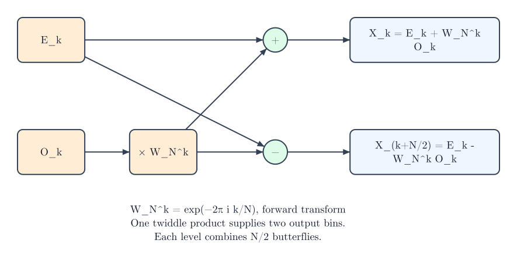
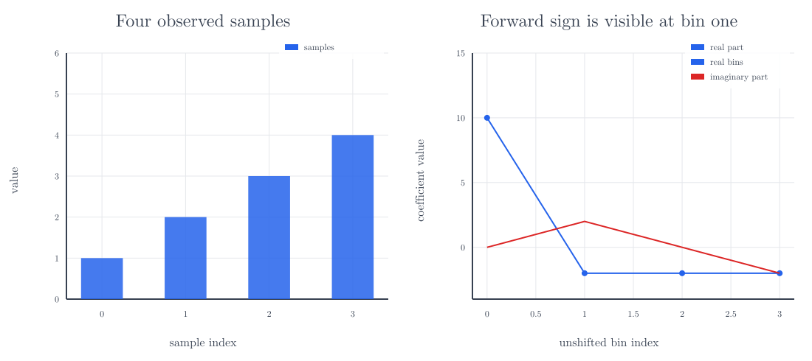
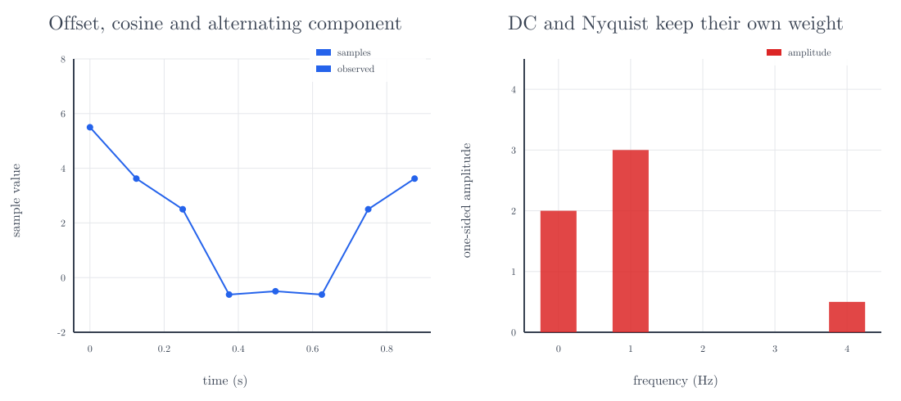
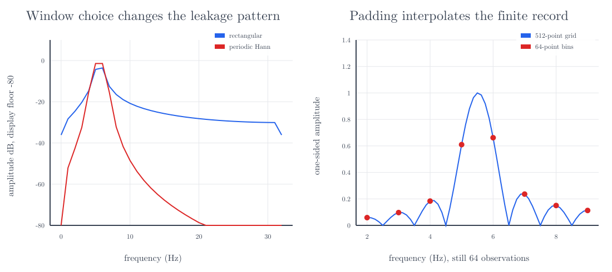
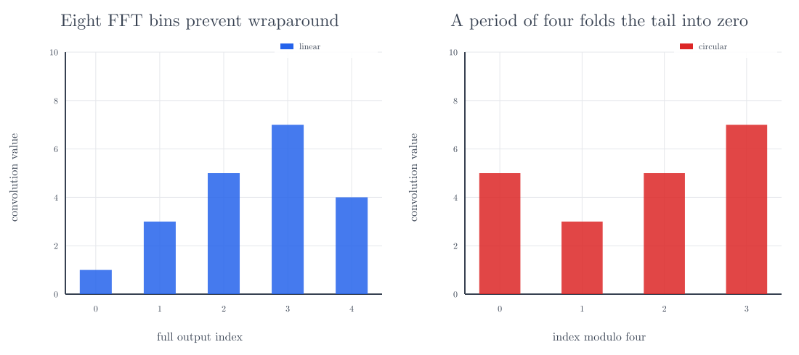
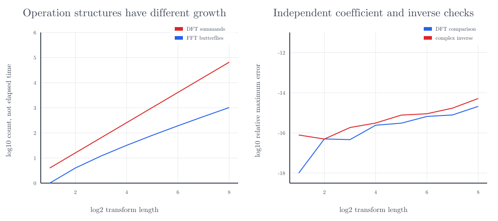
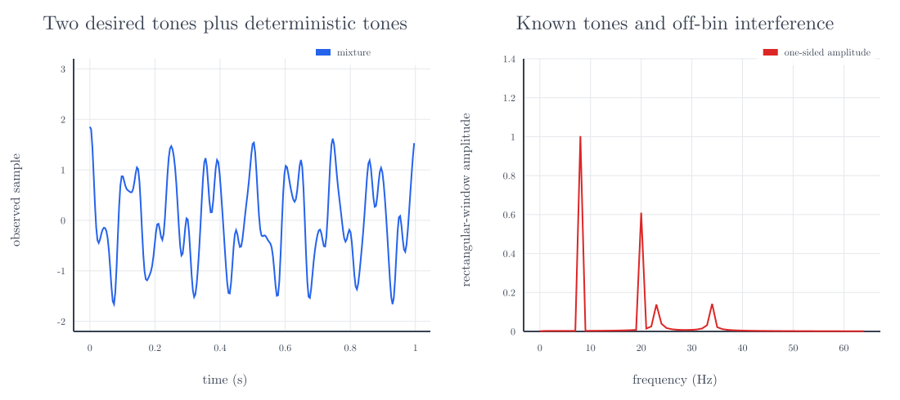

FFT: Butterflies, Spectral Meaning and Convolution
Abstract
A sampled signal can be represented by complex frequency coefficients, but summing every coefficient directly takes quadratic work. We want the same discrete transform more cheaply, together with a clear account of signs, normalization and what a finite record's peaks mean. A four-sample calculation and an eight-sample signal expose those conventions before leakage, windowing, padding and convolution examples. Direct-DFT, complex inverse and energy checks test the radix-2 implementation independently. A 256-sample signal then revisits the original two-tone example with its deterministic interference described as additional sinusoids. All inputs are constructed so that their frequencies and algebra can be checked; no empirical dataset is needed.
The method
Define the transform before interpreting a spectrum
For N complex samples, the forward and inverse conventions here are
algorithms::fft takes a working vector by value and returns all N complex
bins. An lvalue input is unchanged. The inverse flag supplies the positive
exponent and 1/N factor. Empty input returns empty and a singleton is identity;
other lengths must be powers of two. fft_real also returns all N bins, rather
than a packed real-input half spectrum. This report concerns that radix-2 API,
not the separate arbitrary-length tensor transforms under nn::fft.
For sample rate f_s, unshifted bin k represents k*f_s/N up to Nyquist; bins above N/2 represent (k−N)*f_s/N. Real inputs satisfy X[N−k]=conj(X[k]). DC is bin zero; even-N Nyquist is bin N/2, representing both signs of f_s/2. Frequencies separated by integer multiples of f_s produce identical sampled complex exponentials. In particular, real cosines at f and f_s−f alias; an FFT cannot distinguish them from those samples alone.
Reuse even and odd transforms
Split t=2r and t=2r+1. Their length-N/2 transforms E and O obey
The second equality uses W_N(k+N/2)=−W_Nk. Repeating the split gives log2(N) levels, each with N/2 butterflies. The iterative implementation first bit-reverses the input order, then combines length-two blocks, length-four blocks, and so on. Its work is O(N log N), with N/2*log2(N) butterflies; a direct DFT has N squared summands. The by-value working vector occupies O(N) storage; after it exists, butterflies update it in place. These are operation structures, not a claim about a measured speed ratio.
The concept diagram below is drawn by dm::graphics::Diagram. Its editable C++
source is the complete block below; regeneration uses the same datamunge
toolchain as the numerical examples. Exports consume the saved local SVG.
#include <dm/dm.hpp>
int main() {
std::filesystem::create_directories("build");
dm::graphics::Diagram diagram;
dm::graphics::DiagramNodeStyle blue;
auto orange = blue;
orange.fill = {255, 237, 213};
auto green = blue;
green.fill = {220, 252, 231};
auto op = green;
op.circle = true;
op.width = op.height = .65;
op.padding = 6;
auto twiddle = orange;
twiddle.width = 1.8;
auto output = blue;
output.width = 4;
diagram.node("even", {0, 1.5}, "E_k", twiddle).node("odd", {0, -1.5}, "O_k",
twiddle).node("twiddle",
{3, -1.5},
"× W_N^k",
twiddle).node("plus", {6, 1.5}, "+", op).node("minus", {6, -1.5}, "−", op).node("first", {10, 1.5}, "X_k = E_k + W_N^k O_k", output).node("second", {10, -1.5}, "X_(k+N/2) = E_k - W_N^k O_k", output).edge("even", "plus").edge("even", "minus").edge("odd", "twiddle").edge("twiddle", "plus").edge("twiddle", "minus").edge("plus", "first").edge("minus", "second").text({5, -3.4}, "W_N^k = exp(−2π i k/N), forward transform\nOne twiddle product supplies two output bins.\nEach level combines N/2 butterflies.");
diagram.save_svg("build/fft_butterfly.svg");
}
Preserve energy and distinguish magnitude from amplitude
Orthogonality of the complex exponential basis gives Parseval's identity:
A round trip alone can miss paired convention errors, so fft_diagnostics
compares forward coefficients with a separate direct sum, checks the full
complex inverse residual, and checks energy. Its direct reference uses O(N
squared) work and extended accumulation. It is deliberately a small-input
correctness check, not a fast transform. The factorization is exact algebra;
finite arithmetic still has roundoff. The low-level FFT propagates nonfinite
arithmetic, while the diagnostics reject nonfinite inputs and unrepresentable
results.
For M real observed samples and window weights w, zero-pad to a power-of-two N>=M. Write W=sum(w), U=sum(w squared), and a_k=1 at DC and Nyquist, two elsewhere. The one-sided summary uses
For an isolated coherent interior cosine, A recovers its amplitude. It is not an exact amplitude estimator for an off-bin mixture. DC and Nyquist are not doubled. Q is a mean-square contribution per bin, not power spectral density per hertz. For a rectangular window, W=U=M; neither denominator counts appended zeros. For periodic Hann, w_t=.5−.5*cos(2*pi*t/M), with M in the denominator rather than the symmetric M−1 window convention. The window trades lower distant leakage for a wider main lobe.
A finite record defines a frequency grid, not unlimited resolution
A record spanning T=M/f_s has a frequency scale 1/T. A tone that is not periodic on that record spreads across DFT bins under rectangular truncation. This leakage is a property of the finite observation/window, not an FFT implementation error. Padding changes grid spacing from f_s/M to f_s/N and samples the same finite-record transform more densely. It adds no observed duration, no new samples and no intrinsic ability to resolve arbitrarily close tones. Windows and coherent-gain correction do not remove aliasing or make off-bin peak estimates universally exact.
Multiplication in frequency wraps unless padding prevents it
Inverse-transforming the product of two length-N DFTs gives circular convolution:
For input lengths L and H, full linear convolution has L+H−1 samples. Padding to
at least that length makes the circular result equal the linear one on its
support. fft_linear_convolution chooses the smallest sufficient power of two,
multiplies coefficients, applies the normalized inverse and trims the result. It
returns real parts, discarding imaginary roundoff. Its O(N log N) work and O(N)
storage include padding; an empty operand gives an empty result.
Simple examples
Four samples expose the complex signs
For x=(1,2,3,4), even samples (1,3) give E=(4,−2) and odd samples (2,4) give O=(6,−2). At k=1 the twiddle is −i, so E_1+(−i)O_1=−2+2i. The full result is (10,−2+2i,−2,−2−2i). Spectral squared magnitudes sum to 120; dividing by four returns time energy 30. The table preserves imaginary signs rather than showing only magnitudes, and the diagnostic includes imaginary inverse residuals.
#include <dm/dm.hpp>
int main() {
using namespace dm::algorithms;
const std::vector<double> x = {1, 2, 3, 4};
const auto transformed = fft_real(x);
std::vector<double> real, imaginary;
for (auto z : transformed) {
real.push_back(z.real());
imaginary.push_back(z.imag());
}
dm::dstruct::DataFrame table;
table.add_column("bin", std::vector<double>{0, 1, 2, 3});
table.add_column("real", real);
table.add_column("imaginary", imaginary);
auto signal =
dm::graphics::RPlot::create(), coefficients =
dm::graphics::RPlot::create();
signal.bars({0, 1, 2, 3}, x, "samples", {37, 99, 235}, .5).title(
"Four observed samples").x_label("sample index").y_label("value").y_limits(0, 6);
coefficients.line({0, 1, 2, 3}, real, "real part", {37, 99, 235}).points(
{0, 1, 2, 3}, real, "real bins", {37, 99, 235}, 4).line(
{0, 1, 2, 3}, imaginary, "imaginary part", {220, 38, 38}).title(
"Forward sign is visible at bin one").x_label("unshifted bin index").y_label("coefficient value").y_limits(-4, 15);
std::filesystem::create_directories("build");
dm::graphics::RLayout::create(1, 2).add(signal).add(coefficients).size(
1100, 490).fit_panels().save_svg("build/fft_four_samples.svg");
dm::dstruct::DataFrame::MarkdownOptions fmt;
fmt.digits = 6;
fmt.scientific = {"max_dft_error", "relative_dft_error",
"max_inverse_error", "relative_inverse_error",
"relative_energy_error"};
std::print("{}\n\n{}\n", table.to_md(6),
fft_diagnostics(std::vector<std::complex<double>>(x.begin(),
x.end())).to_md(fmt));
}| bin | real | imaginary |
|---|---|---|
| 0 | 10 | 0 |
| 1 | -2 | 2 |
| 2 | -2 | 0 |
| 3 | -2 | -2 |
| length | max_dft_error | relative_dft_error | max_inverse_error | relative_inverse_error | time_energy | frequency_energy_over_n | relative_energy_error |
|---|---|---|---|---|---|---|---|
| 4 | 2.220446e-16 | 2.220446e-17 | 5.721189e-18 | 1.430297e-18 | 30 | 30 | 7.401487e-18 |

Do not double DC or Nyquist
With eight samples at eight samples per second, construct x_t=2+3*cos(2*pi*t/8)+.5*(−1)t. The DC magnitude is 16, the conjugate pair at bins one and seven has magnitude 12 each, and Nyquist has magnitude four. The one-sided amplitudes are therefore two, three and .5. Mean square is 22+32/2+.52=8.75; Nyquist's alternating samples have mean square .25, not .125.
#include <dm/dm.hpp>
int main() {
using namespace dm::algorithms;
std::vector<double> x(8), time;
for (int t = 0; t < 8; ++t) {
time.push_back(t / 8.);
x[t] =
2 + 3 * std::cos(2 * std::numbers::pi_v<double> * t / 8) + .5 * (
t % 2 ? -1 : 1);
}
const auto s = fft_spectrum(x, 8);
double mean_square = 0;
for (double v : s.numeric_column("mean_square").values())
mean_square += v;
if (std::abs(s.double_at("amplitude", 0) - 2) > 1e-12 ||
std::abs(s.double_at("amplitude", 1) - 3) > 1e-12 ||
std::abs(s.double_at("amplitude", 4) - .5) > 1e-12 ||
std::abs(mean_square - 8.75) > 1e-12)
throw std::runtime_error("one-sided calibration mismatch");
auto signal =
dm::graphics::RPlot::create(), amplitude =
dm::graphics::RPlot::create();
signal.line(time, x, "samples", {37, 99, 235}).points(time, x, "observed",
{37, 99, 235}, 4).title("Offset, cosine and alternating component").x_label("time (s)").y_label("sample value").y_limits(-2, 8);
amplitude.bars(s.numeric_column("frequency").values(),
s.numeric_column("amplitude").values(), "amplitude",
{220, 38, 38}, .5).title("DC and Nyquist keep their own weight").x_label("frequency (Hz)").y_label("one-sided amplitude").y_limits(0, 4.5);
std::filesystem::create_directories("build");
dm::graphics::RLayout::create(1, 2).add(signal).add(amplitude).size(1100,
490).fit_panels().save_svg("build/fft_amplitude.svg");
std::print("{}\n\nSum of per-bin mean-square contributions: {:.9f}.\n",
s.to_md(9), mean_square);
}| bin | frequency | real | imaginary | magnitude | amplitude | mean_square |
|---|---|---|---|---|---|---|
| 0 | 0 | 16 | 0 | 16 | 2.0 | 4.00 |
| 1 | 1 | 12 | 0 | 12 | 3.0 | 4.50 |
| 2 | 2 | 0 | 0 | 0 | 0.0 | 0.00 |
| 3 | 3 | 0 | 0 | 0 | 0.0 | 0.00 |
| 4 | 4 | 4 | 0 | 4 | 0.5 | 0.25 |
Sum of per-bin mean-square contributions: 8.750000000.

The same observation can have a denser frequency grid
Observe a 5.5 Hz unit cosine for 64 samples at 64 samples per second: only one second of data. The 64-point rectangular DFT cannot place a bin at 5.5 Hz; periodic Hann lowers distant side lobes while broadening the main lobe. Padding the same rectangular record to 512 adds bins spaced .125 Hz, including 5.5, but the observed duration is unchanged. Its coherent denominator remains 64. The left panel displays 20*log10(amplitude) floored at −80 dB solely for plotting; the right uses raw amplitudes. The table retains original-grid and padded-grid peak values without calling the finer grid a longer observation or a new resolution guarantee.
#include <dm/dm.hpp>
int main() {
using namespace dm::algorithms;
std::vector<double> x(64);
for (int t = 0; t < 64; ++t)
x[t] = std::cos(2 * std::numbers::pi_v<double> * 5.5 * t / 64);
const auto rect =
fft_spectrum(x, 64), hann =
fft_spectrum(x, 64, 0, FftWindow::PeriodicHann), padded =
fft_spectrum(x, 64, 512);
auto db = [](const auto &s) {
auto v = s.numeric_column("amplitude").values();
for (auto &a : v)
a = std::max(-80., 20 * std::log10(std::max(1e-300, a)));
return v;
};
auto leakage =
dm::graphics::RPlot::create(), grid = dm::graphics::RPlot::create();
leakage.line(rect.numeric_column("frequency").values(), db(rect),
"rectangular", {37, 99, 235}).line(hann.numeric_column(
"frequency").values(),
db(hann), "periodic Hann",
{220, 38, 38}).title(
"Window choice changes the leakage pattern").x_label("frequency (Hz)").y_label("amplitude dB, display floor -80").y_limits(-80, 10);
const auto zoom = padded.filter([](const auto &r) {
return r.get_double("frequency") >= 2 && r.get_double("frequency") <= 9;
}), coarse = rect.filter([](const auto &r) {
return r.get_double("frequency") >= 2 && r.get_double("frequency") <= 9;
});
grid.line(zoom.numeric_column("frequency").values(),
zoom.numeric_column("amplitude").values(), "512-point grid",
{37, 99, 235}).points(coarse.numeric_column("frequency").values(),
coarse.numeric_column("amplitude").values(),
"64-point bins", {220, 38, 38}, 5).title(
"Padding interpolates the finite record").x_label(
"frequency (Hz), still 64 observations").y_label("one-sided amplitude").y_limits(0, 1.4);
std::filesystem::create_directories("build");
dm::graphics::RLayout::create(1, 2).add(leakage).add(grid).size(1100, 490).fit_panels().save_svg("build/fft_leakage.svg");
std::print("64 observed samples in each case.\n\nOriginal-grid bins near the tone:\n\n{}\n\nPadded-grid " "bin at 5.5 Hz:\n\n{}\n",
rect.slice(4, 8).to_md(9), padded.slice(44, 45).to_md(9));
}64 observed samples in each case.
Original-grid bins near the tone:
| bin | frequency | real | imaginary | magnitude | amplitude | mean_square |
|---|---|---|---|---|---|---|
| 4 | 4 | 1 | 5.78500523 | 5.87079939 | 0.183462481 | 0.016829241 |
| 5 | 5 | 1 | 19.48511850 | 19.51076224 | 0.609711320 | 0.185873947 |
| 6 | 6 | 1 | -21.15732822 | 21.18094751 | 0.661904610 | 0.219058856 |
| 7 | 7 | 1 | -7.48828007 | 7.55475602 | 0.236086125 | 0.027868329 |
Padded-grid bin at 5.5 Hz:
| bin | frequency | real | imaginary | magnitude | amplitude | mean_square |
|---|---|---|---|---|---|---|
| 44 | 5.5 | 32 | 0 | 32 | 1 | 0.0625 |

Insufficient padding wraps a linear convolution tail
For a=(1,2,3,4) and b=(1,1), full linear convolution is (1,3,5,7,4). Multiplying length-four spectra instead gives period-four output (5,3,5,7): the final four wraps into the first sample. The native linear helper pads to eight, then returns the five supported outputs. Padding here prevents aliasing in the convolution index; it has a different purpose from interpolating a spectrum display.
#include <dm/dm.hpp>
int main() {
using namespace dm::algorithms;
const auto linear = fft_linear_convolution({1, 2, 3, 4}, {1, 1});
auto X = fft_real({1, 2, 3, 4});
const auto H = fft_real({1, 1, 0, 0});
for (std::size_t k = 0; k < X.size(); ++k)
X[k] *= H[k];
const auto inverse = fft(X, true);
std::vector<double> circular;
for (auto z : inverse)
circular.push_back(z.real());
dm::dstruct::DataFrame table;
table.add_column("index", std::vector<double>{0, 1, 2, 3, 4});
table.add_column("full_linear", linear);
table.add_column("period_four",
std::vector<double>{circular[0], circular[1], circular[2],
circular[3],
std::numeric_limits<double>::quiet_NaN()});
auto full =
dm::graphics::RPlot::create(), wrap = dm::graphics::RPlot::create();
full.bars({0, 1, 2, 3, 4}, linear, "linear", {37, 99, 235}, .5).title(
"Eight FFT bins prevent wraparound").x_label("full output index").y_label("convolution value").y_limits(0, 10);
wrap.bars({0, 1, 2, 3}, circular, "circular", {220, 38, 38}, .5).title(
"A period of four folds the tail into zero").x_label("index modulo four").y_label("convolution value").y_limits(0, 10);
std::filesystem::create_directories("build");
dm::graphics::RLayout::create(1, 2).add(full).add(wrap).size(1100, 490).fit_panels().save_svg("build/fft_convolution.svg");
std::print("{}\n\nPeriod-four bin zero: {:.9f}; full linear first plus final: {:.9f}.\n",
table.to_md(9), circular[0], linear[0] + linear[4]);
}| index | full_linear | period_four |
|---|---|---|
| 0 | 1 | 5 |
| 1 | 3 | 3 |
| 2 | 5 | 5 |
| 3 | 7 | 7 |
| 4 | 4 | nan |
Period-four bin zero: 5.000000000; full linear first plus final: 5.000000000.

Checking the theory
Direct sums, inverse residuals and energy test different properties
For power-of-two lengths 2..256, construct a bounded deterministic complex sequence with varying real and imaginary parts. Each row compares FFT coefficients to an extended-accumulation direct DFT, checks the complex inverse and tests Parseval. The plotted error values are logarithms, with a display floor of 1e-18 for exact-zero residuals. The first plot counts DFT summands and FFT butterflies, whose costs differ; it illustrates growth orders and is not a stopwatch benchmark. Relative errors are reported in scientific notation so small residuals do not appear as rounded zeros.
#include <dm/dm.hpp>
int main() {
using namespace dm::algorithms;
dm::dstruct::DataFrame table;
std::vector<double> lengths, logn, direct_count, fast_count, forward_error, inverse_error;
std::vector<std::string> ftext, itext, etext;
for (std::size_t n : {2, 4, 8, 16, 32, 64, 128, 256}) {
std::vector<std::complex<double>> x(n);
for (std::size_t t = 0; t < n; ++t)
x[t] = {std::sin(.37 * t) + .2 * std::cos(.11 * t),
.5 * std::cos(.23 * t) - .1 * std::sin(.61 * t)};
const auto d = fft_diagnostics(x);
const auto f =
d.double_at("relative_dft_error", 0), i =
d.double_at("relative_inverse_error", 0), e =
d.double_at("relative_energy_error", 0);
if (f > 2e-12 || i > 2e-12 || e > 2e-12)
throw std::runtime_error("transform identity check failed");
lengths.push_back(n);
logn.push_back(std::log2(n));
direct_count.push_back(std::log10(double(n) * n));
fast_count.push_back(std::log10(n * std::log2(n) / 2));
forward_error.push_back(std::log10(std::max(1e-18, f)));
inverse_error.push_back(std::log10(std::max(1e-18, i)));
ftext.push_back(std::format("{:.3e}", f));
itext.push_back(std::format("{:.3e}", i));
etext.push_back(std::format("{:.3e}", e));
}
table.add_column("length", lengths);
table.add_column("relative_dft_error", ftext);
table.add_column("relative_inverse_error", itext);
table.add_column("relative_energy_error", etext);
auto counts =
dm::graphics::RPlot::create(), errors = dm::graphics::RPlot::create();
counts.line(logn, direct_count, "DFT summands", {220, 38, 38}).line(
logn, fast_count, "FFT butterflies", {37, 99, 235}).title(
"Operation structures have different growth").x_label(
"log2 transform length").y_label("log10 count, not elapsed time").y_limits(0, 6);
errors.line(logn, forward_error, "DFT comparison", {37, 99, 235}).line(
logn, inverse_error, "complex inverse", {220, 38, 38}).title(
"Independent coefficient and inverse checks").x_label(
"log2 transform length").y_label("log10 relative maximum error").y_limits(-18.5, -11);
std::filesystem::create_directories("build");
dm::graphics::RLayout::create(1, 2).add(counts).add(errors).size(1100, 490).fit_panels().save_svg("build/fft_checks.svg");
std::print("{}\n", table.to_md(0));
}| length | relative_dft_error | relative_inverse_error | relative_energy_error |
|---|---|---|---|
| 2 | 0.000e+00 | 7.862e-17 | 1.191e-16 |
| 4 | 5.004e-17 | 4.944e-17 | 8.731e-18 |
| 8 | 4.619e-17 | 1.849e-16 | 5.996e-17 |
| 16 | 2.412e-16 | 3.101e-16 | 1.371e-16 |
| 32 | 3.054e-16 | 7.697e-16 | 2.345e-16 |
| 64 | 6.584e-16 | 8.985e-16 | 4.701e-16 |
| 128 | 7.850e-16 | 1.714e-15 | 7.923e-16 |
| 256 | 2.089e-15 | 5.167e-15 | 2.336e-15 |

A longer constructed signal
The original interference has two deterministic frequencies
At f_s=256 Hz, the desired record contains a unit cosine at 8 Hz and a .6-amplitude cosine at 20 Hz. The original extra term .3*sin(.7*t+1)*cos(.13*t) expands to .15*sin(.83*t+1)+.15*sin(.57*t+1). Its frequencies are about 33.82 and 23.22 Hz, not a random noise distribution. They are off-bin and leak into neighbouring bins. The table ranks the unmodified one-sided spectrum; no coefficient is zeroed merely to find the next peak. An inverse check reconstructs the complete observed mixture, including the interference. It does not denoise the desired tones.
#include <dm/dm.hpp>
int main() {
using namespace dm::algorithms;
std::vector<double> x(256), time;
for (int t = 0; t < 256; ++t) {
time.push_back(t / 256.);
x[t] =
std::cos(2 * std::numbers::pi_v<double> * 8 * t / 256) +
.6 * std::cos(2 * std::numbers::pi_v<double> * 20 * t / 256) +
.3 * std::sin(.7 * t + 1) * std::cos(.13 * t);
}
const auto spectrum = fft_spectrum(x, 256);
const auto shown = spectrum.filter([](const auto &r) {
return r.get_double("frequency") <= 64;
});
const auto ranked = spectrum.filter([](const auto &r) {
return r.get_double("bin") > 0;
}).sort_by("amplitude", false).head(5);
const auto checks =
fft_diagnostics(std::vector<std::complex<double>>(x.begin(), x.end()));
auto waveform =
dm::graphics::RPlot::create(), frequency =
dm::graphics::RPlot::create();
waveform.line(time, x, "mixture", {37, 99, 235}).title(
"Two desired tones plus deterministic tones").x_label("time (s)").y_label("observed sample").y_limits(-2.2, 3.2);
frequency.line(shown.numeric_column("frequency").values(),
shown.numeric_column("amplitude").values(),
"one-sided amplitude", {220, 38, 38}).title(
"Known tones and off-bin interference").x_label("frequency (Hz)").y_label("rectangular-window amplitude").y_limits(0, 1.4);
std::filesystem::create_directories("build");
dm::graphics::RLayout::create(1, 2).add(waveform).add(frequency).size(
1100, 490).fit_panels().save_svg("build/fft_two_tones.svg");
dm::dstruct::DataFrame::MarkdownOptions fmt;
fmt.digits = 6;
fmt.scientific = {"max_dft_error", "relative_dft_error",
"max_inverse_error", "relative_inverse_error",
"relative_energy_error"};
std::print("{}\n\nDirect/round-trip/energy checks:\n\n{}\n\nInterference frequencies: {:.9f} Hz and " "{:.9f} Hz.\nMaximum complex inverse residual: {:.9e}.\n",
ranked.select({"bin", "frequency", "magnitude", "amplitude"}).to_md(9),
checks.to_md(fmt), .83 * 256 / (2 * std::numbers::pi_v<double>),
.57 * 256 / (2 * std::numbers::pi_v<double>),
checks.double_at("max_inverse_error", 0));
}| bin | frequency | magnitude | amplitude |
|---|---|---|---|
| 8 | 8 | 128.37950687 | 1.002964897 |
| 20 | 20 | 78.06444163 | 0.609878450 |
| 34 | 34 | 18.14938162 | 0.141792044 |
| 23 | 23 | 17.70266630 | 0.138302080 |
| 24 | 24 | 5.06390186 | 0.039561733 |
Direct/round-trip/energy checks:
| length | max_dft_error | relative_dft_error | max_inverse_error | relative_inverse_error | time_energy | frequency_energy_over_n | relative_energy_error |
|---|---|---|---|---|---|---|---|
| 256 | 3.140266e-13 | 2.446080e-15 | 4.475077e-15 | 2.415773e-15 | 182.121400 | 182.121400 | 2.491384e-15 |
Interference frequencies: 33.817242308 Hz and 23.223889296 Hz. Maximum complex inverse residual: 4.475077264e-15.

Conclusion
The small calculations establish the forward sign, inverse scale, conjugate symmetry, DC/Nyquist weighting and Parseval normalization. Leakage and padding concern a finite record's interpretation; linear and circular convolution require different padding choices. The longer signal contains known coherent tones and deterministic off-bin interference. Its inverse check tests reconstruction of the entire mixture, while independent direct sums check the coefficient convention. These results establish numerical agreement on the reported signals, not exact floating-point arithmetic, noise removal, unlimited resolution or a timing claim on arbitrary hardware.
References
- Cooley, J. W. and Tukey, J. W. (1965). An Algorithm for the Machine Calculation of Complex Fourier Series. Mathematics of Computation 19(90), 297–301. doi:10.1090/S0025-5718-1965-0178586-1.
- FFTW authors. The one-dimensional DFT. Exponent convention and unnormalized transforms; this library additionally normalizes its inverse by N.
- NumPy developers. rfft. Hermitian redundancy and the special DC/Nyquist endpoints; the native fft_real here returns the full spectrum.
- SciPy developers. Spectral analysis and Hann window. Window normalization, spectral leakage and zero-padding conventions.
- SciPy developers. fftconvolve. Full linear convolution and FFT-based implementation.